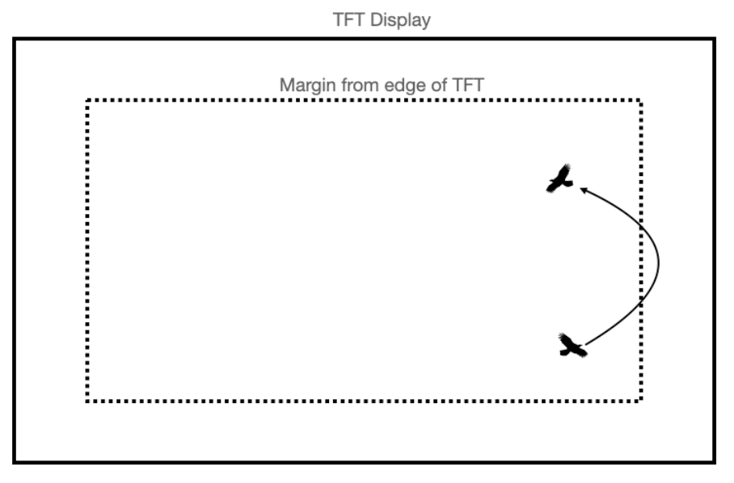
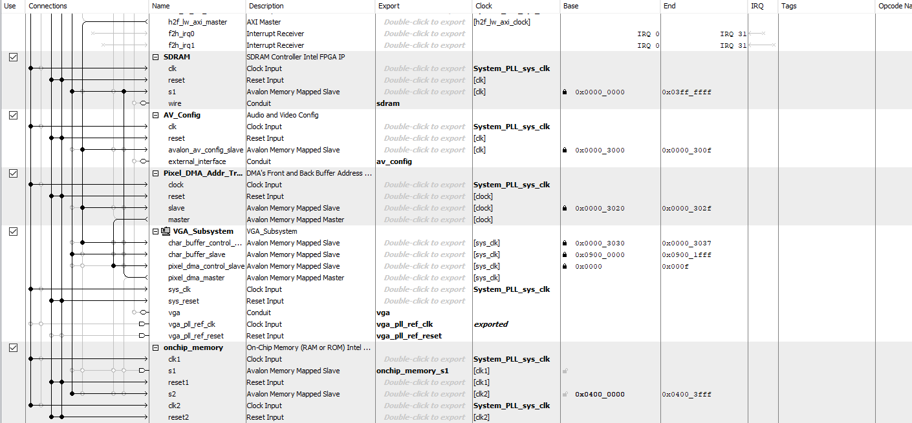

FPGA-accelerated Boid Algorithm Simulation on VGA
ECE 5760 Advanced Microcontroller Final Project
By Michael Wu, Yen-Hsing Li, Matt Hales
Demo
Demonstration Video
Introduction
Using a combination of the ARM A9 processor and DE1 SoC FPGA, our project successfully simulated dynamic boid (‘bird-oid object') flocking patterns, with a focus on optimizing cycle requirements and execution time. We first started with creating a “baseline” design strictly running on the ARM A9 processor. This baseline design was created using C code and was capable of computing the flocking patterns with a maximum number of 3,000 boids at 60 frames per second. Our “alternative” design was to create an update function on the FPGA that would calculate and update each boid’s position, in x and y coordinates, and they’re velocity, in the x and y directions as well. In the end, we were successfully able to simulate boid flocking patterns on the FPGA with a maximum number of 150 boids being displayed. Our goal with this project was to ideally improve the number of cycles required for the total boid update function and see an improvement in the overall execution time. We believed that if we could decrease the number of cycles with dedicated hardware running the update, we could eventually do the calculations for more than 3,000 boids, as found on the ARM processor.
Boid Algorithm
The rationale behind our project idea came from Professor Hunter Adam’s ECE 4760 boids lab, where students created a boid implementation in C using a Raspberry Pi 2040[1]. To create the flocking simulation, there are three main steps to follow: separation, alignment, and cohesion. In separation, the boids that are too close move away from each other. In alignment, the boids that are close with their neighbors will try to match the speed of the neighboring boids. Lastly, in cohesion, the boids will move toward the center of the neighbors to create a smaller group of boids。

Figure 1. Determining Separation, Alignment, and Cohesion[1]
Figure 1 above details when separation, alignment, and cohesion need to occur and provides a visual representation of the logic required for each process.
When boids are too close together, we perform two steps to make the boids spread out a little bit. The first step is to calculate the distance of the current boid to the closest boid.
close_dx += boid.x - otherboid.x
close_dy += boid.y - otherboid.y
Once this has been calculated, we created a factor for avoidance: avoidfactor. This avoid factor, while still relatively small, will be multiplied by the close_dx and close_dy values previously calculated:
boid.vx += close_dx*avoidfactor
boid.vy += close_dy*avoidfactor
Figure 2. Boid Separation[1]
The next step is the calculation required for alignment. As previously mentioned, alignment is when each boid attempts to match the velocity of the boids inside its visible range, shown in Figure 1. To perform the alignment, we perform the following steps:
1. At the start of the update for a particular boid, three variables (xvel_avg, yvel_avg, and neighboring_boids) are zeroed.
2. We loop through every other boid. If the distance to a particular boid is less than the visible range, then
xvel_avg += otherboid.vx
yvel_avg += otherboid.vy
neighboring_boids += 1
3. Once we've looped through all other boids, we do the following if neighboring_boids > 0:
xvel_avg = xvel_avg/neighboring_boids
yvel_avg = yvel_avg/neighboring_boids
4. We then update the velocity according to:
boid.vx += (xvel_avg - boid.vx)*matchingfactor
boid.vy += (yvel_avg - boid.vy)*matchingfactor
(where matchingfactor is a tunable parameter)
Figure 3. Boid Alignment[1]
The last boid on boid update is based on cohesion, as each boid steers gently toward the center of mass of other boids within its visible range. It does so in the following way:
1. At the start of the update for a particular boid, three variables (xpos_avg, ypos_avg, and neighboring_boids) are zeroed
2. We loop through every other boid. If the distance to a particular boid is less than the visible range, then
xpos_avg += otherboid.x
ypos_avg += otherboid.y
neighboring_boids += 1
3. Once we've looped through all other boids, we do the following if neighboring_boids > 0:
xpos_avg = xpos_avg/neighboring_boids
ypos_avg = ypos_avg/neighboring_boids
4. We then update the velocity according to:
boid.vx += (xpos_avg - boid.x)*centeringfactor
boid.vy += (ypos_avg - boid.y)*centeringfactor
(where centeringfactor is a tunable parameter)
Figure 4. Boid Cohesion[1]
The last step for the boid update is determining when the boids need to turn so all boids stay within the confines of the VGA screen we are using. This is simply done by the following conditional statements:

Figure 5. Screen Boundary Conditions[1]
Figure 5 is from an outdated lab manual when using a different microcontroller and display, though the logic behind the boundary conditions stays the same.
Baseline Design
The first step of the project was to create a baseline version of the boids algorithm in C that implemented the algorithm described above. We created multiple functions to help us achieve our goal: a list of boids, boid_initialize, spawnBoid, boundary_check, and boid_update. The list of boids was initialized by a struct that contained five variables: pos_x, pos_y, vx, vy, and color. As the names suggest, the pos_x and pos_y variables store the x and y coordinates of each boid, while the vx and vy variables store the velocity in the x and y direction. The color variable was used to specify the color when drawing each boid. For our case, we chose to keep each boid white for easier visuals as the background color of our display was black.
When spawning boids, we created the spawnBoid function that would take the x and y coordinates of the boid as well as the vx and vy velocities values. Inside the function, a random starting position was assigned as well as a random speed value. Ideally, we wanted the boids to start in a new location every time the simulation ran to provide a unique simulation each run.
Additionally, the boundary_check function was created to enact the turnfactor variable, as described previously. This variable determines when the boids need to change direction, specifically when they are outside the boundary. Our design creates a boundary smaller than the size of the VGA display. This is done to better visualize how the boids move. To allow for this execution, we created 4 helper functions: hitTop, hitBottom, hitRight, hitLeft. Each of these helper functions hold the values for the x positions (hitLeft and hitRight) and y position (hitTop and hitBottom) of the boundaries, checking if a boid is beyond it. If either the boid’s x or y positions were outside of these bounds, then either the x and / or y velocities will be updated by the value of the turn factor.
Lastly, we created the boid_update function that executed the boid algorithm. For the boid algorithm to work correctly, we need to loop through every boid we are simulating. Within each iteration we did the following:
-
Check for boids within the visual range.
-
If there is a boid within the visual range, calculate the square distance between the current boid and the neighbor boid.
-
Check if the distance from the current boid to the neighbor boid is less than the protected range. If true, update the coordinates delta for both x and y.
-
Check if the distance from the current boid to the neighbor boid is within the visual range. If true, calculate the x position, y position, x velocity, and y velocity averagesIf true, update the coordinates delta for both x and y. Increment the number of neighboring boids by one.
After the loop has finished, we then need to modify the current boid’s position and velocities. The first thing we do is check how many neighboring boids have been identified and divide the x and y position averages and the x and y velocity averages by the number of neighboring boids. We also compute the centering factor and matching factors by adding the current x velocity with a multiplication of the (x position - current boids x position) with the centering factor and adding another multiplication of (x velocity average - current boids x velocity) with the matching factor. We perform the same step again but for the y velocity. Once the x and y velocities have been updated, we then perform another multiplication on these velocities, this time with the delta values for x and y we calculated earlier and the avoidance factor. We then add the result of the multiplication to the x and y velocity values.
At this point in the algorithm, we need to perform the boundary check to implement the turn factor if the boid is now outside the boundary. This is done by simply calling the boundary_check function on the current boid.
The last part of the algorithm is dedicated to enforcing a maximum and minimum speed and updating the x and y positions based on the velocity values we’ve calculated. We first check if the current speed of the boid is greater than or less than the minimum and maximum by performing the alpha max plus beta min algorithm. This algorithm is a quick algorithm for calculating the square root. If the speed is less than the minimum speed or greater than the maximum speed allowed, we perform the following action:
if (speed < minspeed && speed != 0) {
*vx = multfix15(divfix(*vx,speed),minspeed);
*vy = multfix15(divfix(*vy,speed),minspeed);
}
if (speed > maxspeed) {
*vx = multfix15(divfix(*vx,speed),maxspeed);
*vy = multfix15(divfix(*vy,speed),maxspeed);
}
Lastly, we increment the x and y positions by the x and y velocities by simply adding or subtracting the two values.
With the algorithm completed, we were able to simulate boids interacting with each other and the boundaries. Additionally, on the ARM processor, we were successfully able to simulate up to 3,000 boids at a speed of 60 frames per second!
Alternative Design: High Level

Figure 6. High-Level System Diagram of Alternative Design
In our alternative design, we aim to speed up calculation time for the boid algorithm. To do so, we migrate the implementation of the boid algorithm from the HPS side to the C side. Furthermore, we decided to keep drawing functionalities on the HPS side because we would like to let the FPGA work on the boid algorithm only and have no hardware overhead from drawing. In order to transmit data between the FPGA and the HPS, we use on-chip SRAM consisting of M10 blocks as a memory buffer between hardware and software.
As shown in the system design diagram, The ARM on the HPS side stores the current data of all the boids (x-coordinate, y-coordinate, velocity in the x-direction, velocity in the y-direction) in dedicated addresses of the SRAM. On the other hand, the FPGA reads from those addresses, and stores the acquired data in local arrays updating boids’ locations and speeds according to the boid algorithm, and then stores the updated information back on the same addresses in the SRAM. Later, the ARM reads from corresponding addresses in the SRAM, looks for updated boid information, and draws the boids at new locations with new speeds on the VGA screen.
Alternative Design: Low Level
Starting from this part, we will go through the low-level design of VGA, SRAM, HPS, and FPGA sides respectively.
Alternative Design Low Level: VGA
The HPS uses the VGA subsystem module to draw on the VGA screen. The code we used for drawing on the VGA was from ECE 5760 class website. under “DE1-SoC: Examples verified for Quartus version18.1” , and named “GPU with FAST display from SRAM”. [2]
Since we are only using the HPS to draw the VGA, we are using the simple graphics processor for the HPS side to draw on the VGA screen from this code. We retain the original Qsys VGA subsystem and dual-ported SRAM for the VGA frame buffer.
Alternative Design Low Level: SRAM
The on-chip SRAM we use is composed of M10k memory blocks because it supports bi-directional dual-port access. We choose the data size to be 32 bits as the fixed number we use is 32 bits with 15 bits after the decimal point. For total memory size, 4096 bytes was used for our 100-boid implementation as each boid needs 4 memory addresses to store its x position, y position, x velocity, and y velocity. Later when we try to implement 1000 boids, we change the total memory size to 16384 bytes.
Figure 7. Qsys SRAM Module Setting
In Qsys, in the end, we created the on-chip memory module. Its clock is connected to the system clock from the system PLL, its reset is connected to the System PLL reset and ARM HPS reset, and its s1 is connected to the Altera AXI master as a slave. Since the SDRAM used for VGA display is also connecting to the Altera AXI master as a slave and has its address from 0x0000_0000 to 0x03ff_ffff, we change the base and end of the on-chip SRAM to be from 0x0400_0000 to 0x0400_3FFF.
Figure 8. Qsys Connection, Part I
Figure 9. Qsys Connection, Part II
Alternative Design Low Level: HPS
On the SRAM, the first few addresses from 0xC0000000 to 0xC3FFFFFF are reserved for VGA display. Therefore, the addresses storing boids’ information range from 0xC4000000 to 0xC4000FFF. In our design, we assign the first address as a finished handshake flag between the HPS and the FPGA, assign the 2nd to 5th addresses to the x position, y position, x velocity, and y velocity of the first boid, assign the 6th to 9th addresses to the x position, y position, x velocity, and y velocity of the second boid, etc.
On the HPS side, in the main function of the c code, we first create and initialize the boid instances by calling initialization and spawn boid functions. They are identical to their counterparts in the baseline C code. [code snippet]
Then in an infinite while loop, we draw the boundary lines and start the timer for execution time. [code snippet]
Inside each iteration, we first erase traces of previous boids on the VGA screen by iterating through the local boid array on the HPS side and drawing all the previous locations where our boids appeared in black. [code snippet]
Second, the HPS stores the data from HPS local arrays in the SRAM. After it finishes storing, the data at address 0xC4000000, or the finished handshake flag, is marked as 1 to indicate that the HPS has finished storing. [code snippet]
Third, while the FPGA is updating the boid, the data at address 0xC4000000, indicated by the fp_ram_ptr, remains as 1. Once it is set to 0, the HPS will know that the FPGA has finished updating the boids’ information and finished storing them back to the same addresses inside the SRAM. [code snippet]
Fourth, After seeing the finished flag from the FPGA, the HPS proceeds to read from the SRAM addresses and updates local boid arrays with the corresponding updated data from the SRAM. Furthermore, the HPS draws the boids at new locations using the updated x and y coordinates by iterating through the local arrays and painting pixels corresponding to the x and y coordinates of the boids in white. [code snippet]
Fifth, the timer is stopped and the HPS calculates the total time, including time for HPS writing to SRAM, FPGA reading from SRAM, FPGA boid algorithm execution, FPGA writing to SRAM, HPS reading from SRAM, and HPS drawing on the VGA. Moreover, the HPS prints the time on the VGA screen, and delays for 17 ms before the next iteration of the infinite while loop to ensure the frame rate of the VGA screen is kept at 60 Hz. [code snippet]
Alternative Design Low Level: FPGA
Boids Update hardware design
A high-level diagram of the boids update module is shown in Figure 10. We use a boids_attr_array on the FPGA side for the module to get the previous updated state because the algorithm updates the boids sequentially in each update. This is one of the design tradeoffs we made when we designed this hardware structure. We could use only the SRAM instead of creating this local array, but it would substantially increase the overall cycle time due to read/write latency. Conversely, creating this array requires a significant number of logic units, which could limit our hardware utility when we scale up the boids. As our main objective is to speed up the updating process on the FPGA, we made the choice of creating a local array to store the boids’ state. Another design decision we made is the 12.15 format fix point representation, this is because we used fix15 in our C baseline code, and each multiplier in FPGA consists of 27 bits.
Figure 10. The hardware structure on the FPGA side.
In order to establish communication between the SRAM and the boids_update.sv, we wrote a 4-state finite-state machine(FSM_2 in Figure 11). This FSM enables the boid_update module to identify the boid currently being updated and determine the appropriate address for accessing the boids_attr_array. After the INIT state, the FSM enters CALC state and the counter starts from 0, which means that the update starts from boid 0. The boids_update module also enables and starts to calculate in this state. Upon receipt of the finish flag from boids_update.sv, the FSM transitions to the "DONE" state and proceeds to increment the counter by 1, initiating the update for the next boid. After all the boids finish their update, it then switches to ALL_FINISH state, an all_finish flag is asserted in this state indicating that we can start writing the updated value from boids_attr_array back to the SRAM. [code snippet]
Figure 11. FSM_2 between SRAM and FPGA.
The boids_update.sv design consists of an 8-state finite-state machine(FSM_1 in Figure 12). The state machine performs calculations such as centering, avoiding, and matching forces, then updates the boid's position and velocity sequentially. The final state marks the completion of the update for the current boid, and the process repeats for the remaining boids in the system. Figure 12 shows the FSM in boids_update.sv for better understanding.
Figure 12. FSM_1 Boid Algorithm Calculation.
In the first INIT state, the module takes the current boids state from the local array boids_attr_array. [code snippet]
Then, it computes the squared distance between current boids(x) and every other boids(x_o). [code snippet]
The BOIDS_NUM_CHK state checks whether the other boid number matches the current one. It skips the CALC state if two numbers are matched. Otherwise, we calculate the distance between them and add the neighboring boids counter if they are within the visual range. The loop between these two states terminates when the counter reaches the total number of boids(NUM_OF_BOIDS) and forward to the SPD_UPDATE state. [code snippet]
In CALC state, if the squared distance is within the visual range, we update the average position and the neighboring counter for later use. [code snippet]
In SPD_UPDATE, if the neighboring counter is larger than 1, the velocity is updated using the output from the speed_update module. This module contains the combination logic of calculating the average x and y position of boids multiplied by the matching and centering factor. Essentially, the average needs division operation, which is very expensive to implement in hardware. The workaround we came up with is to use a lookup table with 2000 entries to get the approximate reciprocal value of the neighboring counter, then we use a signed multiplier to calculate the average position. [code snippet]
For the BOUND_CHK state, the output in this state is connected with the bound_check module. The purpose of this module is to check whether the boid is out of the boundary. If so, we add a turnfactor to slow the boid down and let it turn around back in the boundary. Otherwise, the boid remains at the same speed as the previous state. [code snippet]
The SPD_LIMIT_CHK is a little tricky in our Verilog implementation. In our C baseline design, we use both the division and square root to remain the same x/y ratio after the speed up or slow down. However, due to the hardware utility limitation mentioned above, we add or substrate a small amount of value to the boid instead of using a dedicated square root module. While it is possible to calculate the square root on the HPS side, we discarded this idea to prevent potential slowdowns in the overall boid update computation. [code snippet]
The final x/y coordinates of the boid are determined in POS_UPDATE state. During this state, the updated x and y velocities, obtained from the previous state, are added to the current x and y coordinates. For instance, the x position is calculated as the sum of the current x coordinate and the x velocity (e.g., x_pos = x + vx). To prevent the boids from jumping out of the VGA screen, we add a checker to ensure the boid is inside the screen boundary. If the updated position falls outside the boundary, we subtract 15 pixels from the position and set the velocity to a negative value. [code snippet]
Following this state, the FSM remains in the FINISH state until the enable signal received as input from the outer module becomes 1.
Testing, Results, and Analysis
Execution Frequency
In an attempt to decrease the overall execution time, we decided to increase the frequency of the clock applied to the boids update algorithm logic on the FPGA. Initially, the clock speed was 50 MHz, but we wanted to see if it was possible to increase the frequency without causing any issues with how the algorithm worked. We first started testing with 100 boids being initialized, hoping that the faster clock speed of 65 MHz would provide us with a shorter execution time. However, initially, things were working well and boids were following the “correct” paths. However, very quickly, boids would start to be updated incorrectly, with boids gaining velocity values significantly higher than the maximum speed limit and no longer obeying the boundary conditions. After multiple attempts failing, we tried the same clock speed with 20 boids, to see if this was an issue when performing the algorithm on a smaller set. With 20 boids, we were able to maintain the correct execution of the algorithm with a frequency of 65 MHz for a longer period of time, though after a couple of minutes, we saw a couple boids start to become incorrectly updated. In this case, a couple of the boids would move incredibly quickly around the screen, sometimes just disappearing completely outside of the boundaries. We believe this is a result of not being able to read and write fast enough to the memory. This could also be a bug with our handshake logic that was being used to communicate between the HPS and the FPGA. Maybe the handshake bit was not being set correctly and those boids that became erratic were no longer following the state machines controlling the updates.
We are not exactly sure why this happens but with more experimentation, we would be able to provide a more detailed explanation.
Avoid Factor Issue
Additionally, we encountered issues with the avoid factor when implemented on the FPGA.
Alternative Design Run with 150 boids, avoidfactor = 0.01, protectrange = 2
Alternative Design Run with 150 boids, avoidfactor = 0.05, protectrange = 8
In the videos above, it's obvious that the boids are forming small groups, but those groups are completely avoiding the others. The videos also show boids flickering, though this is a direct result of boids being updated and overwriting the boids that have not been updated yet. It’s important to note that this flickering is normal as the boids position needs to be updated, which can be seen in the HPS implementation with a large number of boids. What’s abnormal though is that with only 20 boids, there should not be any flickering since the boids will be spaced out more. With a large number of boids, the boids get pushed closer together, overpowering the avoid factor and causing the flickering. We are unsure as to why this was happening in the FPGA implementation. Unfortunately, we were unable to implement this functionality into our final design.
Modelsim Verification
To make sure our design is working properly, we wrote a simple SystemVerilog testbench and compare the output with the C baseline design. We tested it by initializing 3 boids with the initial condition shown in Figure 13, where boids_array[0+N*4] and boids_array[1+N*4] are the x and y positions, and boids_array[3+N*4] and boids_array[4+N*4] are the velocities.
Figure 13. The hardware structure on the FPGA side.
We compared the result by observing the waveform and the output from the C code. As the figures below show, the result calculated by the boids_update module is almost the same as the C baseline implementation in the first 2 iterations.

Figure 14. C code result
Figure 15. Modelsim_result
Speed of Execution
To test our design, we changed the number of boids in both the baseline and alternative design, and we also changed the clock frequency of the FPGA design. Below is the execution frequency and time for different numbers of boids by both baseline and alternative design.
For the Baseline design, the HPS clock frequency was kept at a constant 900 MHz by default. We increased the number of boids until the boids’ movements became jittery and can no longer retain the 60 FPS framerate. The maximum number of boids that can be achieved by the HPS is 3000.
For the Alternative design, we changed the FPGA clock frequency by adding pll clocks in the Qsys. As discussed in the execution frequency section, increasing the FPGA clock frequency can lead to bad behaviors of the boids. Therefore, we only used 65 MHz for 100 boids and decided to keep the frequency at 50 MHz for the remaining testing. The maximum amount of boids that can be achieved by the alternative design is 150. If we generate more boids than this number, the FPGA will run out of logical units and would not compile.
we took pictures of VGA screens for different runs and they are attached in the Appendix C and below is a table of summary.
| Number of boids | HPS Clock Frequency (MHz) | Baseline design Time (us) | FPGAClock Frequency(MHz) | Alternative Design Time (us) |
|---|---|---|---|---|
| 20 | 900 | 93 | 50 | 129 |
| 100 | 900 | 496 | 65 | 857 |
| 150 | 900 | 803 | 50 | 1820 |
| 1000 | 900 | 5135 | NA | NA |
From the table, we can see the time for the alternative design is actually larger than the time for the baseline design. There are several explanations for this.
First off, the clock frequency on the HPS is 18 times faster than that on the FPGA, meaning the baseline has more cycles per second than the alternative. Therefore, it is sort of expected that the baseline design has lower time than the alternative.
Secondly, the baseline time accounts for the HPS boid algorithm computation and HPS drawing on the VGA only. However, the alternative time incorporates the time for HPS writing to SRAM, FPGA reading from SRAM, FPGA boid algorithm execution, FPGA writing to SRAM, HPS reading from SRAM, and HPS drawing on the VGA. Since we are using M10k blocks in SRAM, it takes 1 cycle to store and 2 cycles to read, which leads to a lot of overhead and latency bidirectionally between FPGA and SRAM and between HPS and SRAM, especially as the number of boids increases. To get an idea of how much the actual computation takes on the FPGA side, we use signal tap.
For 150 boids, we used the signal tap to figure out the computation time on the FPGA side only.

Figure 16. FPGA computatation cycles for 150 boids in decimal
Figure 17. FPGA computatation cycles on signal tap for 150 boids
As indicated by the finished signal, the update of 150 boids without reading from or writing to the memory takes 45900 cycles. 45900 cycles * 20 nanoseconds/cycle = 918000 nanoseconds = 918 us. On the other hand, the HPS takes 803 us to compute and draw. Since the HPS is using 900 MHz, which is 18 times faster than the 50 MHz on the FPGA, if we were using the same clock frequency on the FPGA, we would expect the computation to be 918 / 18 = 51 us, which is significantly faster than the computation time on HPS. Hence, we can see from computation-wise only, our verilog implementation of the boid algorithm actually has a good speed-up.
Conclusion
Initially, we expected the execution time of the alternative design FPGA to be significantly faster when compared to the baseline design on the ARM processor. However, this was not immediately apparent when directly comparing the execution times of both. In fact, the execution time of FPGA was 30 microseconds slower than the ARM implementation when running with 20 boids, and when using 150 boids, the FPGA implementation finished executing in 1800 microseconds, while the ARM finished in 800 microseconds. While this is a substantial difference between the two implementations we need to consider not only the clock speeds between the two processors, but also the latency incurred when reading and writing to the SRAM on both the ARM side and the FPGA side.
First, we need to address the elephant in the room: the ARM A9 core frequency versus the FPGA frequency. The ARM A9 operates at a frequency of 900 MHz, while the FPGA operates at 50 MHz on its main clock. That means that the ARM A9 operates 18 times faster than the FPGA, so it was crucial to create an algorithm that could perform the algorithm in less cycles to ideally perform better in terms of execution time. While we didn’t see a decrease in the overall execution time when implemented on the FPGA, it is important to note that our FPGA design performed the boid update algorithm in 45,000 cycles with 20 boids. We computed the number of cycles on the ARM implementation, the baseline design in C, to be 90,000 cycles per boid update. While the execution time is slower, we did achieve our goal of decreasing the number of cycles, and we decreased the cycles by half, which was really impressive to see. We also need to take into consideration the inherent latency caused by reading and writing from memory on the FPGA side. This latency causes a decrease in the execution time and number of cycles, which could be a reason why the execution time on the FPGA implementation was slower. One way we could try to improve this latency would be to implement a pipelined SRAM, meaning we could read and write faster, losing the extra cycle it takes for the read.
To improve upon our design, we would like to incorporate a correct division or a reciprocal module for the calculation of the speed in the boids update function. We were unable to successfully incorporate either of these modules before the end of the project, and this would allow for a “better simulation of the boids” as they would have more of a random flight path. Currently, our design implements updating the speed by shifting the values by 3, and while this is quick, it causes the boids to continually shift around in the upper left hand corner of the boundary. The final state of the division module allows for correct computation of positive input values, but fails when the inputs are negative, which is not good as the speed will be negative a decent amount of the time. Additionally, the division module we made required about 80 cycles for the calculation to finish, which would slow down the execution time of each boid, especially with a large number of boids. That is why we also considered creating a reciprocal module, which would take an input, calculate the reciprocal, and pass that value into a multiplication module instead of a division module. Ideally, this would be faster than division and would also work for both positive and negative values.
Another way we can improve upon our design would be to avoid the use of registers when storing the updated values of each boid’s x-position, y-position, x-velocity, and y-velocity values. The current implementation, which uses an array of pointers associated with the values for each boid listed above, has a few key problems limiting our design. As we increase the number of boids we want to simulate, we use an increasing number of hardware resources, maxing out the FPGA simulation to just 150 boids. However, if we want to increase the number of boids to say 500 boids, or even a thousand or more, we could take a different approach: directly reading from and writing to the memory address directly. Since we would be reading and writing directly, there would be no need to include registers for storing the values of each of the boid properties. As a result, we could drastically reduce the number of logic units required for holding those values. However, one problem immediately arises with this design. When writing to the memory, we can do that operation in one cycle, though when reading from memory, it takes 2 cycles to fetch and receive the data. This inherent latency when reading can cause substantial performance degradation when simulating a large number of boids. As an example, if we were to compile a design that used 1,000 boids, we could potentially see an increase of approximately 4,000 cycles. We believe this would be true since loading from a register takes only one cycle, though if we are reading from a memory location, we need to wait an additional cycle. However, this calculation is dependent on each boid being far apart from each other. This value can substantially increase when the boids get closer together and start following each other’s path more closely, requiring the logic to loop through each boid that’s in the neighboring boids zone as discussed previously.
For the baseline design, we re-used Michael’s code from ECE 4760, where he implemented the boids algorithm purely in C. For our alternative design on the FPGA, we developed some of our modules using templates provided by Professor Hunter Adam’s example code, while not using any outside sources or modules. We also did not use any of Altera’s IP and any code in the public domain.
Our team
Michael Wu
yw2464@cornell.edu

Yen-Hsing Li
yl2924@cornell.edu
Matt Hales
mah426@cornell.edu